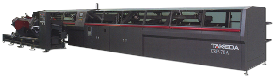
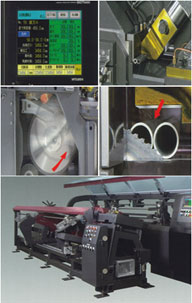

.png)
csp-70a
(takeda 파이프절단기)

| image | contents |
|---|---|
|  |
|
| 구분 | CSP-70A | ||
|---|---|---|---|
| Work | 소재크기 | 1本 | 35~70mm ※1 |
| 2本 | 10~35mm ※1 | ||
| 소재길이 | 2500mm~6000mm (가공단위는 500mm) | ||
| 톱날종류 | 초경날 | ||
| 하이스날 | |||
| 톱날외경 | 285mm(최대 315mm) | ||
| 285mm : 10~35(2本) ~ 60.5(1本) | |||
| 315mm : 10~35(2本) ~ 70(1本) | |||
| 톱날두께 | 1.5~2.5mm | ||
| 날 개수 | 80~200개 (톱날사이즈에따라 다름) | ||
| Cutting | 절단조건 | 주속 | 80~450m/min |
| 회전속도 | 104~624rpm | ||
| 전달속도 | 0~40mm/sec | ||
| 절단폭 | 1.5~2.5mm | ||
| 톱날구동모터용량 | 3.7/5.5kW(연속30분정격) AC스핀들모터 | ||
| 톱날흔들림방지장치 | 2개 | ||
| 톱날이동유 유효 스트로크 | 200mm | ||
| 구동방식 | 센서내장유압실린더+디지털유압서보 | ||
| 절단방식 | 하부스윙절단 | ||
| 톱날헤드감속비(比) | 1/5.3 | ||
| 바이스 | 바이스압 | 14.4kN(1472kgf) | |
| 구조 | 45°대각선원바이스 | ||
| Sizing Glipper |
구동방법 | 볼스크류 + AC서보모터 | |
| 측정구동모터용량 | 5.5kW AC서보모터 | ||
| 유효 스트로크 | 2005mm | ||
| 반송위치결정속도 | 130m/min | ||
| 최소위치결정측정방법 | 0.01mm | ||
| 그립위치 | 전체폭 | ||
| 그립압 | 4.15kN (424kgf) | ||
| Loading Device |
공급장치 | 방식 | 미스트방식 |
| 최대적재량 | 3000kg | ||
| 소재길이 | 2500~6000mm | ||
| Auto Loader | 방식 | Arm 이동식 | |
| 그 외 | 파이프사이즈 및 가공본수변경시 자동조절 | ||
| Option | 슬라이드테이블스트로크 | 250mm | |
| 제품길이 | 100~3000mm | ||
| 푸셔전진으로 디버링장치측으로 방출 검수장치가 장착된 디버링장치의 경우 120mm~ |
|||
| 방출구 | 2곳 | ||
| 단재 및 제품 | 10~100mm | ||
| 슬라이드테이블이 후퇴함으로 제품낙하 제품, 단재는 본 기계 슈터로 선별 |
|||
| 잔재 | 45~200mm미만(슬라이드테이블의 후퇴로 낙하) 200~2600mm(푸셔가 후퇴하면서 반대쪽 디버링장치측에 방출) |
||
| Other | 팁 수리 | Chip bucket (기계측면에 1곳) | |
| 전원전압 | AC3 200/220V | ||
| 공기압 | 0.5Mpa(5kgf/cm2) | ||
| Electrical Specifi- cation |
제어장치 | Sequencer | |
| 제품데이터종류(순차No.) | 6종류 | ||
| 가공데이터종류(실행데이터No.) | 9종류 | ||
| 표시 | 10인치EL판넬(컬러터치판넬) | ||
| video |
|---|
top